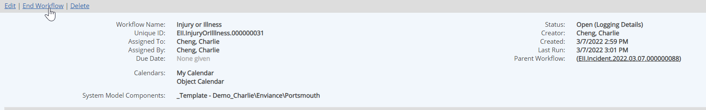
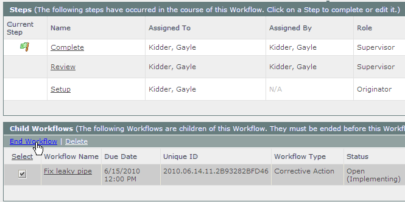
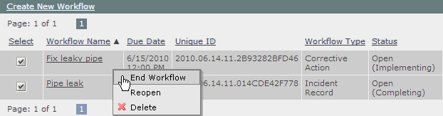

A workflow may be closed when it has completed its process, or at any step where the user has the permission to do so.
To end a workflow, you must have Close permission for the workflow, granted through any workflow role you are a member of, or have the Manage Workflows right.
To end a workflow from the Step View or Edit page:
Open the workflow step form by one of the following methods:
From an email notification, select the link in the email, then sign into the system. See Workflow Notifications.
From the Workflows panel on your Desktop (or other dashboard), click the Current Step link for the workflow.
In the Workflows page (Tasks and Workflows page) right-click the workflow and select Complete.
The current workflow step form is displayed in Edit or View mode, depending on your assignee status.
To end a workflow from the Workflow Overview:

To end one or more child workflows from the Workflow Overview:

If no information is required, you may close one or more workflows quickly from the Workflows page in the Tasks and Workflows page.
A child workflow may remain open after the parent workflow has been closed. Child workflows must be closed separately.
To close one or more open workflows from Workflows Manager:
Right click and select End Workflow. Click again to confirm.
